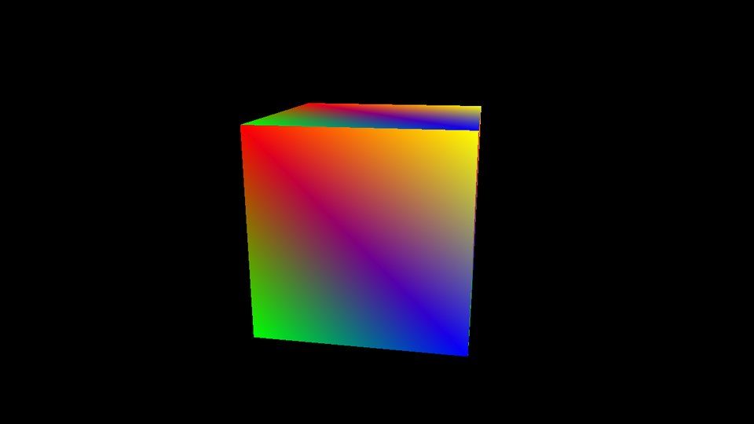
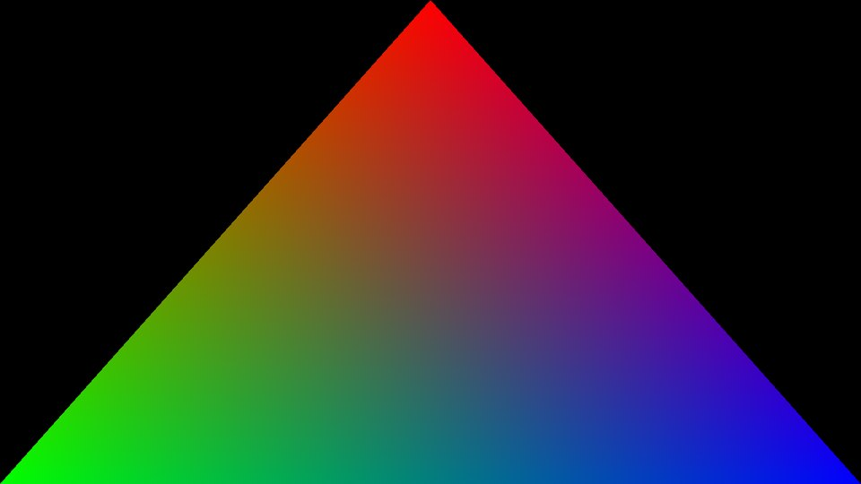
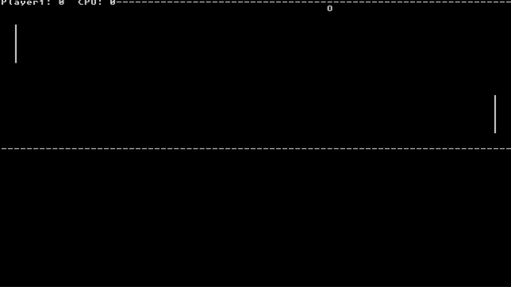

Switch 2, desde cero.
NeXo 2 es un emulador experimental de Nintendo Switch 2. La CPU, el kernel y la GPU están escritos a mano, documentados y comprobados con tests. Aún no ejecuta juegos comerciales; homebrew sí, y ya dibuja en 3D.



100%CPU ARM64 idéntica a un ARM real en 78 000 instrucciones al azar
×6más rápida con el JIT: ~1 100 millones de instrucciones por segundo
7/9ejemplos 3D oficiales de deko3d funcionando
178tests automáticos, con intérprete y con JIT